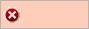

Resolving problems identified in the Issues column (Concept Assistant)
Before publishing documents to Teamcenter, use the Validate command to assess the accuracy of the documents being published. The cells in the Issues column indicate any issues that should be noted to ensure the documents are correctly published to the Teamcenter.
|
No action required. Documents are ready to publish to Teamcenter. |
|
|
 |
Action is recommended before saving the documents to Teamcenter. |
Issues are noted when any of these conditions occur:
-
Copy permission is denied.
-
Revise permission is denied.
-
Maximum number of revisions is exceeded.
-
Newer version exists in Teamcenter.
-
Write permission is denied.
-
File is currently checked out by another user.
Click each cell of the Issues column to display information regarding each issue. The tooltip is displayed until you click a different cell in the Issues column.
After you resolve the issues, use the Validate command to verify the document is ready to be published to Teamcenter.
How do I
Create a Concept WorkspaceComparing models in Concept Workspace
Revert files to Teamcenter in Concept Workspace
Push files to a different Concept Workspace
Pull files into a Concept Workspace
Publish concepts to Teamcenter
Learn more
Using Concept Workspace to explore design ideasConcept Workspace workflow
Concept Assistant Publish dialog box
Using the Concept Assistant Publish toolbar
Look up more details
Concept Workspace commandConcept Assistant command
Concept Assistant dialog box